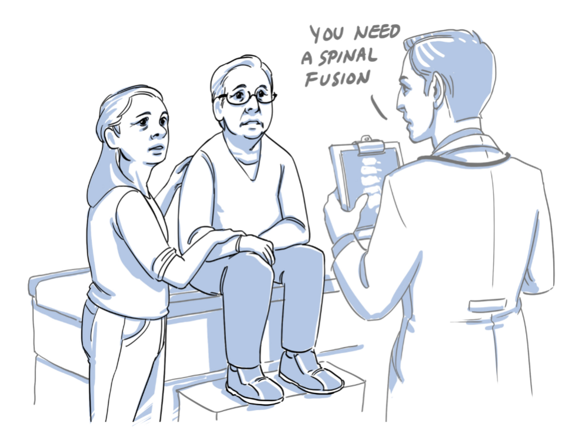

Nidus AI, Inc.
“AI Augmented Collective Intelligence for Better Care”

Life‑changing decisions
need higher confidence.
Patients with complex/critical conditions need timely, credible clinical decision support — but many “life or death” calls are made by a single clinician, under time pressure.
High-stakes case
Multiple comorbidities, ambiguous imaging, prior interventions.
Single‑point judgment
May or may not be the most qualified sub‑specialist for this edge case.
Variation in care
Unnecessary procedures, avoidable cost, and “wrong‑path” episodes of care.
Variation drives avoidable cost.
When cases are ambiguous, independent clinicians can arrive at different diagnoses and different treatment plans. The system needs a repeatable way to convert ambiguity into an evidence-aligned plan.
The “decision spread”
Same patient → different recommendations (a simplified illustration).
What clinicians need
The missing ingredient is collective intelligence—a system that makes consensus the default, not the exception.
AI‑augmented collective intelligence.
MIT’s Center for Collective Intelligence asks how people and computers can be connected so that—collectively— they act more intelligently than any person, group, or computer has ever done before.
Nidus connects
Output
A structured, evidence‑based consensus report for the patient and the attending physician(s).
From “one opinion” → “panel consensus”
Complex cases demand
higher confidence.
Consensus reduces uncertainty
Structured voting
Nidus uses independent review + aggregated voting to produce a clearer consensus recommendation.
Output is not just an answer…
It’s a rationale: what was considered, how strong the agreement was, and why the plan aligns with evidence.
Why independent votes beat a single opinion.
If each reviewer is better than random (even slightly) and opinions are independent, majority voting can rapidly increase the probability of a correct decision.
Medical analog
Think of it like an ensemble model:
Nidus makes this systematic: independent review, structured vote, and a report that captures both the recommendation and the strength of agreement.
Nidus CI = human expertise
+ deep learning.
Inputs → Model → Report
Key idea
Nidus doesn’t replace clinicians — it connects them and removes friction: better data packaging, better expert matching, faster consensus.
Where “deep learning” fits
A 7‑step, AI‑augmented
case triage pipeline.
From intake to consensus report — designed to be fast, structured, and scalable.
Step 1–2: Triage + AI clinical narrative.
Nidus retrieves relevant EMR data and uses AI summarization to produce a structured case narrative that is easy to review (and auditable).
Data packaging (for speed)
What experts see
AI role
Reduce cognitive load, standardize intake, and ensure every reviewer starts from the same (complete) case facts.
Step 3: DICOM imaging
+ AI segmentation.
Nidus retrieves MRI/CT/X‑ray DICOM imaging and uses computer vision to surface key slices/frames — highlighting anatomy and suspected pathology for efficient review.
From “hundreds of slices” → “key frames”
Illustration: segmentation overlay + key-frame selection.
Why it matters
AI is a co‑pilot
The expert remains the final authority, but arrives faster with better context.
Step 4: Expert matching
via recommendation engine.
Nidus selects and distributes cases to the right specialists — balancing specialty fit, experience, responsiveness, and diversity.
How matching works (illustration)
Constraints & safeguards
Outcome
The right experts see the right case, fast — improving the quality of consensus without slowing care.
Steps 5–6: Review, vote,
generate consensus report.
Experts review the same packaged narrative + key imaging, then vote independently. The CI model synthesizes a report with recommendation strength and rationale.
Voting snapshot
Illustration: distribution of expert opinions.
Consensus report includes
Step 7: Patient + attending
act — outcomes feed learning.
A CI system improves over time: outcomes and expert reasoning become labeled data to strengthen future recommendations.
Why it matters.
Consensus gets patients to the right plan sooner — reducing wrong‑path care and downstream cost.
right option, timely decision
reduce outlier decisions
fewer unnecessary procedures
Less friction, fewer delays.
Productivity is a health outcome.
Better decisions → better economics.
Return‑to‑work is a measurable win.
Spine care drives time off work and productivity loss — getting to the right plan sooner matters.
What Nidus improves
Why employers care
Faster access to credible consensus can reduce duration, uncertainty, and productivity loss.
Three customers.
One consensus engine.
Patients
Clarity on complex diagnosis + treatment options.
Doctors / care teams
Input from experienced subspecialists.
Payers / employers
High-cost, high-variance episodes of care.
A perfect storm:
cost + controversy + re‑ops.
Panel reality (Nidus)
Among patients initially recommended spinal surgery.
Why “consensus” is needed
Thesis
Better pre‑decision consensus reduces unnecessary surgery and improves alignment to the right intervention.
When experts strongly agree,
outcomes improve.
In a randomized trial of degenerative spondylolisthesis, alignment with a supermajority expert recommendation was associated with fewer surgical failures.
Failure rate (illustration)
What this means for Nidus
A better “default”
Independent expert votes + AI synthesis → a defensible plan for high-variance decisions.
A global panel, built for speed.
Designed for streamlined review
Network effect
More cases → more labeled opinions → stronger models → better matching and better outcomes.
Proof points de‑risk adoption.
Highlights
Patent
Systems and methods for selecting experts, collecting opinions, and generating an opinion report.
Why now
Positioning
Nidus operationalizes collective intelligence—turning expert consensus into a repeatable, scalable service.
Unique dataset: cases + images
+ many expert labels.
Why labels matter
Deep learning needs scale — and medical labels are expensive. Nidus captures expert reasoning as a byproduct of care.
AI roadmap enabled
Flywheel
More reviews → better matching & synthesis → better outcomes → more adoption → more data.
Multiple pricing paths.
One scalable platform.
Pricing
Cost structure
Go‑to‑market
Unit economics thesis
AI reduces review friction while expert time remains the premium input → target attractive gross margin at scale.
The sky’s the limit
Scaling through payer pilots and specialty expansion.
$1.5M bridge round
to power pilots.
Use of funds (illustration)
Milestones
Bridge thesis
Convert pilots into scalable contracts while hardening the platform and expanding the expert network.
Deep clinical credibility
+ product execution.
Leadership

Patient experience
Operating principle
Build trust: credible experts + transparent process + measurable outcomes.